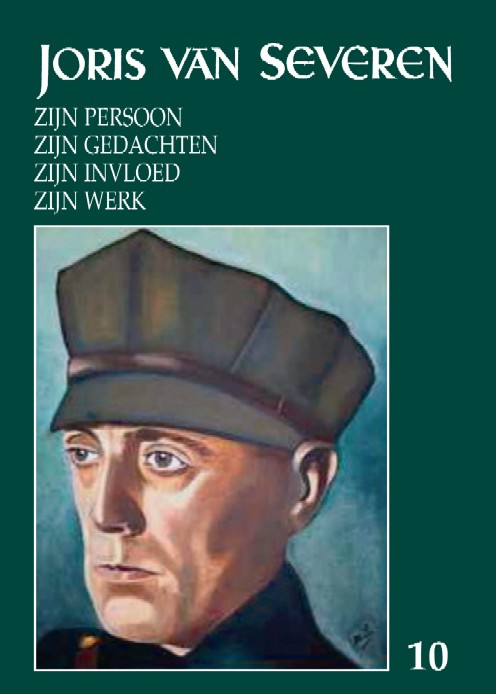

> jaarboek > 10

Een
blik op de inhoudstafel van dit tiende
jaarboek laat opnieuw een wel zeer verscheiden inhoud vermoeden. En dit
is
inderdaad ook het geval. We ontmoeten er Joris van Severen – en
zijn beweging -
zowel in de intieme als in de openbare sferen van hun bestaan. Komen
achtereenvolgens onder de schijnwerper te staan:
- De Stichting
Joris van Severen,
die
instaat voor de jaarlijkse herdenkingsmis in de abdij van Steenbrugge
te
Assebroek, richt daarnaast sporadisch een causerie in over een thema
dat kadert
binnen haar doelstellingen. In 2003 voerde Vik
Eggermont
daar
het woord. Zijn causerie droeg de titel Joris van Severen
als
opvoeder en
het Verdinaso als vormingsbeweging. Aan de hand van getuigenissen
toont hij
aan hoezeer beide omschrijvingen adequaat weergeven waar het Joris van
Severen
om te doen was en op welke wijze hij in zijn opzet slaagde.
- Daarop
aansluitend volgt het tweede
en
afsluitende deel van Romain
Vanlandschoots diepgravende studie Van
syndicalisme naar corporatisme: Juul Declercq (1897-1955). De lange weg
vanACV
naar Verdinaso 1918-1932. Hierin staat vanzelfsprekend de
werkzaamheid van
Juul Declercq centraal, maar we vernemen tevens langs welke soms
grillige wegen
Joris van Severen zijn invloed uitoefende, hoe hij ideëel
evolueerde en deze
evolutie uiteindelijk gestalte gaf in een eigen formatie: het Verdinaso.
- De
volgende bijdragen vormen de acta van
ons 4e Colloquium Joris van Severen dat plaats vond in de
abdij te
Zevenkerken op 9 oktober 2004. Geopend wordt met het Ten geleide
uitgesproken
door Vik
Eggermont,
de huidige voorzitter van het Studiecentrum Joris van Severen. Hierin
roept hij vooreerst de herinnering op aan en de verdiensten van zijn
voorganger
Jef Werkers, die ons kwam te ontvallen op 25 mei 2004. Hij refereert
tevens ook
naar de banden van Joris van Severen met de abdij van Zevenkerken.
- In
Joris van
Severen
en de
Sint-Andriesabdij
van Zevenkerken gaat Kurt
Ravyts dieper in op dit
gegeven. Hij schetst het ontstaan
en de belangrijke rol van deze Benedictijnerabdij en de eraan verbonden
abdijschool en staat uitgebreid stil bij de aldaar op 22 november 1936
gehouden
conferentie over De rol van de adel in deze tijd. Op
uitnodiging van Dom
Emmanuel de Nève nam ook Joris van Severen deel aan deze
gesprekken met
vertegenwoordigers van de aristocratie.
- Daniël
Vanacker,
die instond voor inleiding
en annotaties van Van Severens oorlogsdagboek Die vervloekte oorlog,
sprak op het colloquium over Joris van Severen
en de Frontbeweging. In
de betreffende historiografie heerste hieromtrent nogal behoorlijk wat
onduidelijkheid. De auteur komt tot het besluit dat Joris van Severens
rol
binnen de organisatie eerder beperkt bleef. Zijn rol bestond vooral in
de
invloed die hij op zijn onmiddellijke omgeving uitoefende. Dit doet
onwillekeurig denken aan het thema opvoeden, als door Vik Eggermont
geschetst in
zijn inleidende bijdrage.
- Op
het terrein van de Van
Severenstudie werd
totnogtoe bijzonder weinig aandacht besteed aan de rol van Van Severen
in het
Belgisch parlement. Paul
Meeus brengt daar verandering in met zijn studie
over de Parlementaire
initiatieven en tussenkomsten van Joris van Severen in de Kamer van
Volksvertegenwoordigers 1921-1929. Vooral op basis van de Parlementaire
Handelingen van de betrokken jaren bracht hij die werkzaamheid
minutieus in
kaart. Hij staat daarbij vanzelfsprekend uitgebreid stil bij de
“brandrede” van
29 november 1928, toen Van Severen in een striemend – in het
Frans gehouden –
betoog zijn weerzin ten overstaan van het heersend bestel verwoordde.
- “Lest
but not least” kwam Bart Coppein aan het
woord. In Het
Archief en het Fonds Joris van Severen in het
Universiteitsarchief te Leuven brengt hij een Status
Quaestionis van
de door hem verrichte werkzaamheden op het vlak van inventarisatie. Hij
schetst
uitgebreid de voorgeschiedenis en de wijze waarop het Fonds Joris van
Severen
tot stand kwam. Uit zijn relaas onthouden we vooral hoeveel hij binnen
de hem
toegestane beperkte termijn wist te realiseren. Op termijn zullen als
deze
werkzaamheden resulteren in een Gesammtinventar. In afwachting
daarvan
zullen in 2006 twee door hem afgeronde inventarissen, respectievelijk
van het Fonds en het Archief Joris van Severen gepubliceerd
worden.
- In
het traditiegetrouwe het jaarboek
afsluitende
gedicht komt andermaal Hendrik
Carette aan het woord met een
impressie
rond de kiosk te Abbeville.
______________________
N.a.v. Jaarboek
Joris van
Severen 10 (2006); uitgegeven door het Studiecentrum Joris van
Severen.
Gen., 208 pp., ISBN 90-76057-09-5. Ledenprijs: 25 €; niet-leden:
30 € (+ 3 €
verzendkosten).